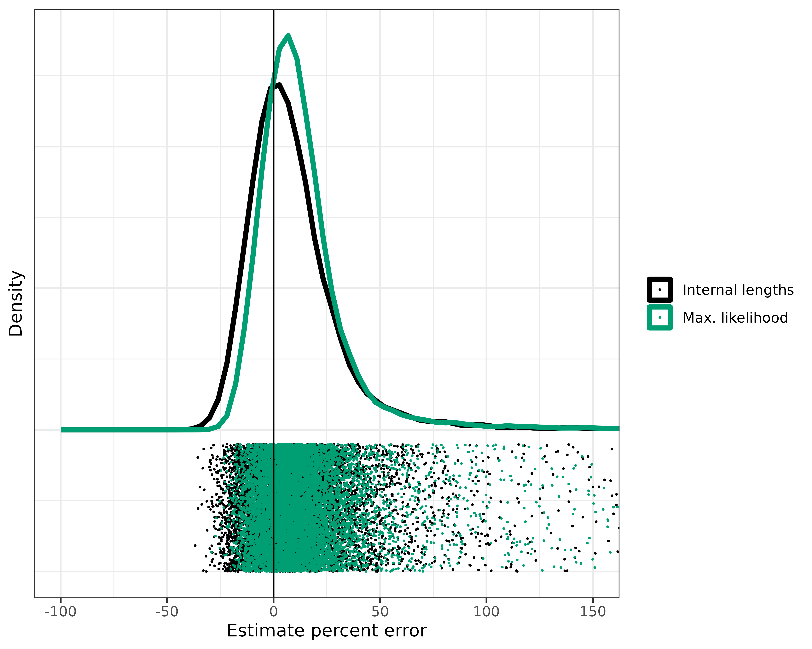
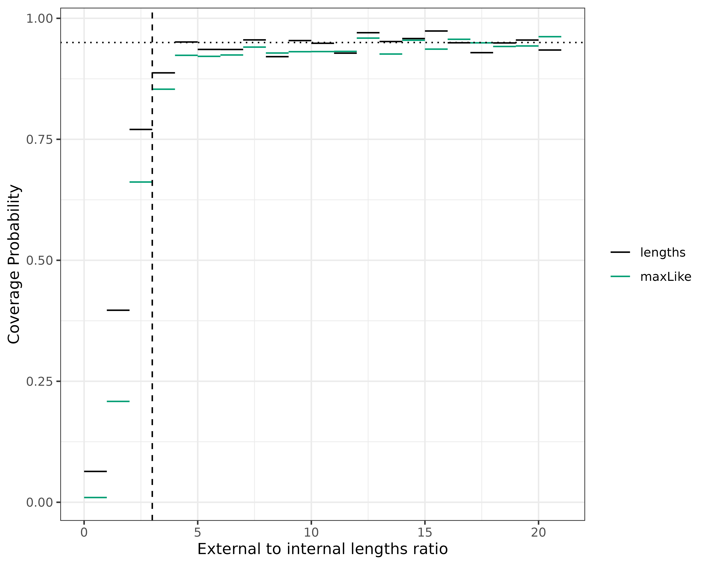
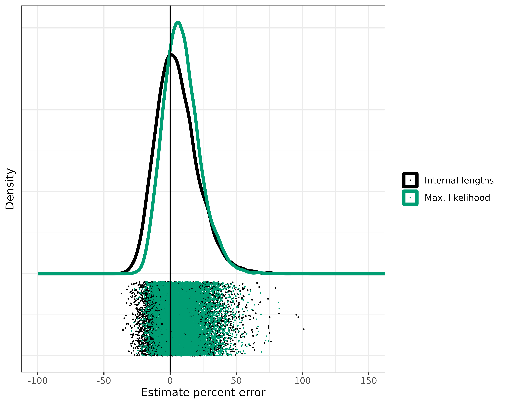

Reproduce simulation results
Source:vignettes/articles/reproduce-simResults.Rmd
reproduce-simResults.RmdNOTE: This is not included as a vignette with the package due to
long-running scripts. Instead, it will only be available as an article
on this website. This
is intended to reproduce simulations shown in our recent work “cloneRate:
fast estimation of single-cell clonal dynamics using coalescent
theory”. We’ll skip over many of the basics, as those are detailed
in our introductory simulation article/vignette which is available in
vignette("cloneRate-simulate"). The simulation procedure
for generating birth-death trees is a direct implementation of results
by Amaury Lambert in a recent paper.
These results allowed us to simulate thousands of trees to check our
methods for growth rate estimation from phylogenetic tree
reconstruction, which is detailed in our
recent paper. We’ll reproduce this validation here.
Setup
First, we’ll have to load the packages we want to use. We’ll be
plotting the trees using the ape package function
ape::plot.phylo()
along with some other ape functions. If you have
cloneRate installed, you already have the ape package. We’ll
also be using ggplot2 to make
our plots, which can be installed from CRAN as shown below:
# Load and attach our package cloneRate
library(cloneRate)
# Load and attach ape, which will be installed if you've installed cloneRate
library(ape)
# Load and attach rstan, which is necessary for running MCMC's (birthDeathMCMC() and Phylofit)
library(rstan)
# Load and attach the parallel package, which is not strictly necessary for running MCMC's, but greatly reduces the time required and is necessary for executing code in this article.
library(parallel)
# Install ggplot2 if necessary, then load and attach it with library()
if (!requireNamespace("ggplot2")) {
install.packages("ggplot2")
}
library(ggplot2)We’ll also set the color palette which we’ll use for most of the plotting. The palette is taken from here
colorPal <- c("#000000", "#E69F00", "#56B4E9", "#009E73", "#F0E442", "#0072B2", "#D55E00", "#CC79A7")Phylofit setup
For applying Phylofit, which was developed by Nicholas Williams and applied in Williams et al. and Mitchell et al., see Emily Mitchell’s github: https://github.com/emily-mitchell/normal_haematopoiesis/blob/main/1_functions/farm_only/phylofit.R. For reproducibility, we’ll include the code from Emily Mithcell’s github in a slightly simplified form, as we don’t want to apply the Aberrant Cell Fraction (ACF) implementation of Phylofit, for reasons detailed in our paper. They implement Phylofit in Rstan, in a similar manner to the birth-death MCMC. First, we compile the Stan code:
stan.code <- "functions{
real glogistic_lpdf(real[] t, real S, real tm, real T,real N){
int n;
real ll;
n=size(t);
ll=0.0;
for(k in 2:n){
ll=ll+log(1+exp(S*(t[k-1]-T+tm)));
ll=ll-(1/(S*N))*choose(k,2)*exp(-S*(T-tm-t[k]))*(exp(S*(t[k-1]-t[k]))-1);
ll=ll+choose(k,2)*(t[k]-t[k-1])/N+log(choose(k,2))-log(N);
}
return(ll);
}
}
data{
int N; //number of tips in the tree
real t[N]; //timing of coalescences (with an added, unused zero)
real T;
real maxT;
real minT;
real maxLN;
real minLN;
}
parameters {
real<lower=0.0001,upper=4> S; //instantaneous growth rate-> exp(S)-1 per Year.
real <lower=minT,upper=maxT> tm; //midpoint
real<lower=minLN,upper=maxLN> LN; //log (base 10) pop size (i.e. carrying capacity)
}
model {
S ~ uniform(0.001,4);
tm ~ uniform(minT,maxT);
LN ~ uniform(minLN,maxLN);
t ~ glogistic(S,tm,T,pow(10,LN));
}
"
PHYLOFIT_STAN_MODEL <- stan_model(model_code = stan.code, model_name = "Phylofit")Now that the Stan code is compiled, it’s ready to be run. We’ll wrap it in a function similar to our other functions for estimating the growth rate. We’ve made some cosmetic changes, but nothing that will affect the Phylofit (no ACF) output for the estimated growth rate:
# Note that this will only work for binary trees
phylofit <- function(ultratree, nChain = 3, nCores = 1, minLN = 4, maxLN = 7,
chainLength = 20000, alpha = 0.05) {
ptm <- proc.time()
# Get data from the tree
coal_times <- sort(ape::branching.times(ultratree), decreasing = T)
dat <- list(
"N" = ape::Ntip(ultratree),
"t" = as.numeric(c(coal_times, 0)),
"T" = max(coal_times),
"maxT" = 2 * max(coal_times),
"minLN" = minLN, "maxLN" = maxLN
)
dat$minT <- as.numeric(dat$T - dat$t[1])
# Run the Stan code
stanr <- sampling(PHYLOFIT_STAN_MODEL,
data = dat, iter = chainLength, control = list(adapt_delta = 0.95),
chains = nChain, cores = nCores
)
# Return the results
ptile <- c(alpha / 2, .5, 1 - alpha / 2)
posterior <- quantile(rstan::extract(stanr)$S, ptile)
data.frame(
"lowerBound" = posterior[1], "estimate" = posterior[2],
"upperBound" = posterior[3], "runtime_s" = (proc.time() - ptm)["elapsed"],
"n" = ape::Ntip(ultratree), "alpha" = alpha, "method" = "Phylofit no ACF",
"nChains" = nChain, "nCores" = nCores, "chainLength" = chainLength
)
}Varying parameters
So far, we’ve looked at the same parameters. Now, we’ll see what happens when we change some important parameters about the birth-death process.
Varying n
One of the most interesting results to explore further is how the
accuracy of the estimates depends on the number of samples. For this,
we’ll look at a few different n parameter values. We can
run simUltra() with a vector input for n.
First, we’ll generate the vector, which we’ll call n_vec.
Keeping with the paper, we’ll produce 500 trees for each value of n:
We keep the growth rate a - b equal to 0.5, but let the
actual birth and death rates vary.
In total, our n_vec is of length 3000. So we’ll want to
make sure a_vec and b_vec are also of length
3000. And we’ll have to set nTrees = 3000. If we generate
multiple trees, we must either set a single value for the parameters, or
a vector of length nTrees. This applies to both
simUltra() and simMut(). Let’s generate some
more trees. Note: this will take a few minutes, but can be parallelized
by setting nCores > 1.
vary_n_trees <- simUltra(
a = a_vec, b = b_vec, cloneAge = 40, n = n_vec,
nTrees = length(n_vec), nCores = 6
)Now, let’s apply our estimates and combine the data.frames:
# Apply our estimates for ultrametric trees
vary_n_maxLike <- suppressWarnings(maxLikelihood(vary_n_trees))
vary_n_lengths <- internalLengths(vary_n_trees)
# Combine the estimates
vary_n_analytical <- rbind(vary_n_maxLike, vary_n_lengths)Let’s make a plot for each of these, showing the performance. We’ll
use ggplot2::facet_wrap() in order to show the same plot at
various n values.
ggplot(vary_n_analytical) +
geom_density(aes(x = estimate, color = method), linewidth = 1) +
geom_vline(xintercept = 0.5) +
theme_bw() +
theme(
axis.text.y = element_blank(), axis.ticks.y = element_blank(),
legend.title = element_blank()
) +
xlim(0, 3) +
xlab("Net growth rate estimate (r)") +
ylab("Density") +
scale_color_manual(
labels = c("Internal lengths", "Max. likelihood"),
values = c("black", colorPal[4])
) +
facet_wrap(~ factor(paste0("n = ", n), levels = paste0("n = ", unique(n_vec))),
ncol = 1, strip.position = "bottom", scales = "free", dir = "v"
)
#> Warning: Removed 2 rows containing non-finite values (`stat_density()`).
As you can see, both estimates are highly dependent on the number of
samples. If you’d like to see the same density values on the y-axis for
all n values, set scales = "fixed" in the
facet_wrap() function.
Markov Chain Monte Carlo (MCMC) application
Note: computationally intensive! Recommended to run in high performance computing environment.
In our paper, we show two alternatives, each with their own set of
advantages and drawbacks. The drawback for both MCMC approaches is that
the computational expense is greatly increased compared to our
internalLengths() and maxLikelihood()
estimates. Phylofit has the additional drawback of overly confident
confidence intervals, where the 95% Highest Posterior Density (HPD)
doesn’t capture the true value 95% of the time. This is because the
deterministic approximation of the population size trajectory in
Phylofit doesn’t match the stochastic underlying birth-death process
which generates the simulated trees. The birthDeathMCMC()
approach doesn’t suffer from this drawback.
With both MCMC approaches, the added computational expense comes with
a notable benefit. These methods do not require that the birth-death
process is supercritical, and will work well even for small growth
rates. We show this in the section Varying r (and/or cloneAge). While
Phylofit does have an additional drawback, it also has increased
flexibility. Phylofit will work well in estimating the growth rate even
if the coalescence times are characteristic of a logistic clonal growth
trajectory. In most cases, the number of samples will be small enough
and the effective population size large enough that the coalescence
times date back to the exponential phase, before carrying capacity and
logistic growth (or other saturating growth) affect the coalescence
times, in which case, constant birth-death approximations
(birthDeathMCMC(), maxLikelihood(), and
internalLengths()) work well.
This is how we would run our MCMC’s. We include the birth-death MCMC
as a part of the cloneRate package, so it’s a
straightforward one-liner:
# NOTE: depending on the number of cores, this will take hours to days
vary_n_bdMCMC <- birthDeathMCMC(vary_n_trees,
nCores = 3, nChains = 3,
chainLength = 15000, verbose = FALSE
)And for Phylofit, we use the phylofit() function we
created at the start, which is a copy of the function from Emily
Mitchell’s github and was created by Nick Williams and used in Williams
et al. and Mitchell et al.
# NOTE: depending on the number of cores, this will take hours to days
vary_n_phylofit <- do.call(
rbind,
mclapply(vary_n_trees, phylofit,
mc.cores = 5, mc.silent = TRUE
)
)Now we can make a list for each set of 500 trees, split by method and
number of samples, n.
# Make a list with each list element containing a data.frame of results for a
# given n and method
vary_n_results <- unlist(
list(
split(vary_n_lengths, vary_n_lengths$n),
split(vary_n_maxLike, vary_n_maxLike$n),
split(vary_n_bdMCMC, vary_n_bdMCMC$n),
split(vary_n_phylofit, vary_n_phylofit$n)
),
recursive = FALSE
)Summary statistics
We can write a basic function to give us all the summary statistics we want from the estimates. Make sure that each input data.frame contains all the same number of tips, true growth rate, method, etc. so that it should be combined.
get_summary_stats <- function(df, growthRate, cloneAge) {
meanEstimate <- mean(df$estimate)
sdEstimate <- stats::sd(df$estimate)
medianEstimate <- stats::median(df$estimate)
normalizedRMSE <- sqrt(sum(((growthRate - df$estimate) / growthRate)^2) / nrow(df))
coverageProb <- sum(df$lowerBound < growthRate & df$upperBound > growthRate) / nrow(df)
runtimeMean <- mean(df$runtime_s)
runtimeSD <- stats::sd(df$runtime_s)
method <- unique(df$method)
nCores <- if (is.null(df$nCores[1])) {
1
} else {
df$nCores[1]
}
nChains <- if (is.null(df$nChains[1])) {
NA
} else {
df$nChains[1]
}
nTips <- unique(df$n)
# Combine everything into a data.frame to return
data.frame(
"Method" = method, "Number of samples, n" = nTips,
"Net growth rate, r" = growthRate, "Clone age, T" = cloneAge,
"Number of simulated trees" = nrow(df),
"Mean estimate" = meanEstimate, "SD estimate" = sdEstimate,
"Median Estimate" = medianEstimate,
"Normalized RMSE" = normalizedRMSE,
"95% Coverage probability" = coverageProb, # Assuming 95% CI
"Runtime (s)" = paste0(round(runtimeMean, 3), " +/- ", round(runtimeSD, 3)),
"Number of cores" = nCores, "Number of chains" = nChains
)
}We can apply our summary stats function to the list of results
contained in vary_n_results to get a summary data.frame
with statistics for each value of n and each method.
summary_n.df <- do.call(rbind, lapply(vary_n_results, get_summary_stats,
growthRate = 0.5, cloneAge = 40
))The information in summary_n.df is available in
Supplementary table 6 of our paper, and is also available as “.csv”
file. Note that the stochastic nature of the tree generation and MCMCs
will lead to slight differences in the results each time the analysis is
performed.
Varying r (and/or cloneAge)
Here, we’ll recreate the analysis in Figures 3 and 4 of our paper, noting that our methods struggle with small growth rates.
Varying r or cloneAge?
First, we have to address something that might otherwise lead to
confusion; varying r is the same as varying
cloneAge. If I simulate a population with a net growth rate
of 1 per year for 20 years it should look the same as a growth rate of
0.5 per year for 40 years. We’ll show this, but first consider the fact
that the units are meaningless, so long as they’re consistent. So a
growth rate of 1/12 and a clone age of 20*12 is the same as a growth
rate of 1 and 20 if the units change from years to months.
This all might be a bit confusing, so let’s plot it. First, we’ll simulate a tree with a growth rate of 2 for 30 years and compare it to a tree with a growth rate of 0.5 and the same 30 years. These trees should look different. Finally, we’ll add a tree that has a growth rate of 0.5, but run it for 120 years. If what I said above is true, we should see that the last tree looks like the first tree, because 0.5 for 120 should be the same as 2 for 30. Let’s find out:
# First tree, r = a - b = 2
tree1 <- simUltra(a = 2.5, b = .5, cloneAge = 30, n = 50)
# Second tree, with r = a - b = 0.5
tree2 <- simUltra(a = 1, b = .5, cloneAge = 30, n = 50)
# Third tree, with r = 0.5 but cloneAge = 120
tree3 <- simUltra(a = 1, b = .5, cloneAge = 120, n = 50)Now, let’s plot using par() to show all three in one
plot
graphics::par(mfrow = c(1, 3))
ape::plot.phylo(tree1, direction = "downwards", show.tip.label = F, main = "r = 2, cloneAge = 30")
ape::plot.phylo(tree2, direction = "downwards", show.tip.label = F, main = "r = 0.5, cloneAge = 30")
ape::plot.phylo(tree3, direction = "downwards", show.tip.label = F, main = "r = 0.5, cloneAge = 120")While the trees on the left and the right aren’t identical due to the stochastic nature of the birth-death process, they are similar, and certainly different from the tree in the middle. We note that there are slight differences in the distribution of coalescence times due to different birth and death rates (i.e. different extinction probabilities), but these differences are small enough to be negligible.
Performance across r values
Now we can arbitrarily choose whether to vary r or
cloneAge. For consistency, we’ll vary r, as we
do in Figures 3 and 4 of our
paper. Here, we have two analyses:
- Simulate at fixed
rvalues, showing which are good and which are problematic - Simulate at random
rvalues and then try to decipher which estimates are good and which aren’t
Set r (Fig. 3)
This is essentially the same as we did in Varying n, but with r instead of
n, so we can run through this quickly. First, generate the
trees, which all have n=100 tips and an age of 40 years,
but vary growth rate, from 0.15 to 1.
r_vec <- rep(c(0.15, 0.2, 0.25, 0.5, 0.75, 1), each = 500)
a_vec <- stats::runif(n = length(r_vec), min = r_vec, max = r_vec + 1)
b_vec <- a_vec - r_vec
vary_r_trees <- simUltra(
a = a_vec, b = b_vec, cloneAge = 40, n = 100,
nTrees = length(a_vec), nCores = 6
)Again, we keep the growth rate a - b equal to
r, but let the actual birth and death rates vary. Now we
apply our methods for estimating the growth rate:
# Apply our fast estimates (computationally cheap)
vary_r_lengths <- suppressWarnings(internalLengths(vary_r_trees))
vary_r_maxLike <- suppressWarnings(maxLikelihood(vary_r_trees))In the above chunk we suppress warnings related to the diagnostic which tells us whether our methods are applicable. We discuss this further in [Random r].
NOTE: As above, running the MCMC methods many times is computationally expensive and should be done in a high performance computing environment:
# NOTE: depending on the number of cores, these will take hours to days
vary_r_bdMCMC <- birthDeathMCMC(vary_r_trees,
nCores = 3, nChains = 3,
chainLength = 15000, verbose = FALSE
)
vary_r_phylofit <- do.call(
rbind,
mclapply(vary_r_trees, phylofit,
mc.cores = 5, mc.silent = TRUE
)
)
# Make a list with each list element containing a data.frame of results for a
# given r and method
vary_r_results <- unlist(
list(
split(vary_r_lengths, r_vec),
split(vary_r_maxLike, r_vec),
split(vary_r_bdMCMC, r_vec),
split(vary_r_phylofit, r_vec)
),
recursive = FALSE
)
summary_r.df <- do.call(rbind, mapply(get_summary_stats, vary_r_results,
growthRate = as.numeric(names(vary_r_results)),
cloneAge = 40, SIMPLIFY = FALSE
))Random r (Fig. 4)
In order to be able to apply our estimates in real-world cases where the growth rate is not known, we need a diagnostic to tell us whether our methods are applicable. This diagnostic should tell us if the tree is supercritical enough for our approximations to hold. The ratio of external to internal lengths is a measure of how “supercritical” or star-shaped the birth-death process is. If the internal lengths are at the top of the tree, we consider it star-shaped, and it’s a good candidate for our methods, which operate under the assumption of a supercritical process. This means that the growth rate is high enough, and enough time has passed, for the coalescence events to occur well before the sampling time. In practice, using these simulations, we show that an external to internal lengths ratio greater than 3 is good enough to apply our methods. Let’s apply our methods and see how they look before and after applying this ratio cutoff. Note that this is what we’re doing in Figure 4 of our paper.
Let’s simulate 10,000 trees with 50 samples each and various growth rates, ranging from 0.1 to 1 per year, run for 40 years. Then, we should be able to dial in the ratio of external to internal lengths that is large enough to work well with our methods.
# Uniform ditribution of r used to generate b_vec
r_vec <- stats::runif(n = 10000, min = 0.1, max = 1)
a_vec <- stats::runif(n = 10000, min = 1, max = 3)
b_vec <- a_vec - r_vec
# Input to simUltra()
random_r_trees <- simUltra(
a = a_vec, b = b_vec, cloneAge = 40, n = 50,
nTrees = length(a_vec), nCores = 6
)Apply our internalLengths() and
maxLikelihood() functions as usual, except that we want to
suppress the warnings. These warnings will tell us that the external to
internal lengths ratio is not high enough for some of the trees, which
is exactly what we’re testing here.
random_r_maxLike <- suppressWarnings(maxLikelihood(random_r_trees))
random_r_lengths <- suppressWarnings(internalLengths(random_r_trees))Because we have different r values, we can’t do a
density plot as before. We’ll have to show a density plot with the x
axis representing percent error. In this case, good estimates will
consolidate around 0. First, we’ll calculate error using the
estimate column and r_vec which has our ground
truth values.
# Calculate error in lengths, adding columns
random_r_lengths$ground_truth <- r_vec
random_r_lengths$percent_error <- 100 * (random_r_lengths$estimate - random_r_lengths$ground_truth) / random_r_lengths$ground_truth
# Do the same for maxLike
random_r_maxLike$ground_truth <- r_vec
random_r_maxLike$percent_error <- 100 * (random_r_maxLike$estimate - random_r_maxLike$ground_truth) / random_r_maxLike$ground_truth
# Combine for ggplot formatting
results_random_r <- rbind(random_r_lengths, random_r_maxLike)
# Plot, adding a vertical line at 0 because that's the error free estimate
ggplot(results_random_r) +
geom_density(aes(x = percent_error, color = method), linewidth = 1.5) +
geom_point(
aes(
x = percent_error, color = method,
y = runif(n = nrow(results_random_r), min = -.01, max = -.001)
),
size = .1
) +
geom_vline(xintercept = 0) +
theme_bw() +
xlim(-100, 2000) +
coord_cartesian(xlim = c(-100, 150)) +
theme(
axis.text.y = element_blank(), axis.ticks.y = element_blank(),
legend.title = element_blank()
) +
xlab("Estimate percent error") +
ylab("Density") +
scale_color_manual(labels = c("Internal lengths", "Max. likelihood"), values = c("black", "#009E73"))
Not bad, but we have some rogue estimates with > 150% error! And we have many with > 50% error.
The external to internal lengths ratio should give a good estimate of how supercritical a tree is. But we need to figure out what ratio is good enough for our assumptions to be valid and our methods to work. For each method, let’s split the results by the ratio of external to internal lengths, and see how accurate the 95% confidence intervals are:
# Split by the integer value of the ratio
# Make a dataframe to store the coverage probabilities
covProbs.df <- data.frame(
"intervalMin" = NA,
"intervalMax" = NA,
"coverageProb" = NA,
"method" = NA,
"count" = NA
)
# Calculate coverage probability at each interval of ext. to int. lengths ratio
for (i in c(0:20)) {
# Get the subset that has a ratio in the interval i to i+1
lengths.tmp <- random_r_lengths[random_r_lengths$extIntRatio >= i &
random_r_lengths$extIntRatio < i + 1, ]
maxLike.tmp <- random_r_maxLike[random_r_maxLike$extIntRatio >= i &
random_r_maxLike$extIntRatio < i + 1, ]
coverageLengths <- sum(lengths.tmp$lowerBound < lengths.tmp$ground_truth &
lengths.tmp$upperBound > lengths.tmp$ground_truth) / nrow(lengths.tmp)
coverageMaxLike <- sum(maxLike.tmp$lowerBound < maxLike.tmp$ground_truth &
maxLike.tmp$upperBound > maxLike.tmp$ground_truth) / nrow(maxLike.tmp)
covProbs.df <- rbind(covProbs.df, data.frame(
"intervalMin" = i,
"intervalMax" = i + 1,
"coverageProb" = c(
coverageLengths,
coverageMaxLike
),
"method" = c("lengths", "maxLike"),
"count" = nrow(maxLike.tmp)
))
}
# Remove NA row from initialization
covProbs.df <- covProbs.df[!is.na(covProbs.df$intervalMin), ]Let’s plot this as we do in Figure 4A of our paper:
ggplot(covProbs.df) +
geom_segment(aes(
x = intervalMin, y = coverageProb,
xend = intervalMax, yend = coverageProb,
color = method
)) +
theme_bw() +
scale_color_manual(values = colorPal[c(1, 4)]) +
ylab("Coverage Probability") +
xlab("External to internal lengths ratio") +
theme(legend.title = element_blank()) +
geom_vline(xintercept = 3, linetype = "dashed") +
geom_hline(yintercept = 0.95, linetype = "dotted", linewidth = .5)
Seeing that the confidence intervals aren’t accurate until the ratio is at least 3, let’s apply that cutoff ratio of 3 to exclude the trees which we don’t think are good candidates for our methods. Hopefully, this will get rid of the very poor estimates.
# Cut those trees with ratio > 3
results_random_r_cut <- results_random_r[results_random_r$extIntRatio >= 3, ]
# How many did we cut
print((nrow(results_random_r) - nrow(results_random_r_cut)) / 2)
#> [1] 1064
# Plot the estimates after the diagnostic
ggplot(results_random_r_cut) +
geom_density(aes(x = percent_error, color = method), linewidth = 1.5) +
geom_point(
aes(
x = percent_error, color = method,
y = runif(n = nrow(results_random_r_cut), min = -.01, max = -.001)
),
size = .1
) +
geom_vline(xintercept = 0) +
theme_bw() +
xlim(-100, 200) +
coord_cartesian(xlim = c(-100, 150)) +
theme(
axis.text.y = element_blank(), axis.ticks.y = element_blank(),
legend.title = element_blank()
) +
xlab("Estimate percent error") +
ylab("Density") +
scale_color_manual(labels = c("Internal lengths", "Max. likelihood"), values = c("black", "#009E73"))
I’d say that’s much better. We cut about 1,000 of the 10,000 trees, eliminating many of the worst estimates. The exact number of trees removed will change each time the analysis is run. The real advantage here is that we can look at a tree and calculate this ratio which will tell us right away if our methods are applicable.
Finally, let’s quantify what we see with Root mean square error and coverage probability, as we do in Figure 4D. We’ll start with the lengths method:
# Get the lengths stats before the diagnostic
normRMSE_before_lengths <- sqrt(sum(((random_r_lengths$estimate - random_r_lengths$ground_truth) /
random_r_lengths$ground_truth)^2) / nrow(random_r_lengths))
coverage_before_lengths <- sum(random_r_lengths$upperBound > random_r_lengths$ground_truth &
random_r_lengths$lowerBound < random_r_lengths$ground_truth) /
nrow(random_r_lengths)
# Get the lengths stats for those passing the diagnostic
lengths_passing <- random_r_lengths[random_r_lengths$extIntRatio > 3, ]
normRMSE_after_lengths <- sqrt(sum(((lengths_passing$estimate - lengths_passing$ground_truth) /
lengths_passing$ground_truth)^2) / nrow(lengths_passing))
coverage_after_lengths <- sum(lengths_passing$upperBound > lengths_passing$ground_truth &
lengths_passing$lowerBound < lengths_passing$ground_truth) /
nrow(lengths_passing)Do the same for the maximum likelihood estimates:
# Get the maxLike stats before the diagnostic
normRMSE_before_maxLike <- sqrt(sum(((random_r_maxLike$estimate - random_r_maxLike$ground_truth) /
random_r_maxLike$ground_truth)^2 / nrow(random_r_maxLike)))
coverage_before_maxLike <- sum(random_r_maxLike$upperBound > random_r_maxLike$ground_truth &
random_r_maxLike$lowerBound < random_r_maxLike$ground_truth) /
nrow(random_r_maxLike)
# Get the maxLike stats for those passing the diagnostic
maxLike_passing <- random_r_maxLike[random_r_maxLike$extIntRatio > 3, ]
normRMSE_after_maxLike <- sqrt(sum(((maxLike_passing$estimate - maxLike_passing$ground_truth) /
maxLike_passing$ground_truth)^2) / nrow(maxLike_passing))
coverage_after_maxLike <- sum(maxLike_passing$upperBound > maxLike_passing$ground_truth &
maxLike_passing$lowerBound < maxLike_passing$ground_truth) /
nrow(maxLike_passing)And then we can construct a table like in Figure 4D:
data.frame(
"Value" = c(
"RMSE before", "RMSE after", "Coverage probability before",
"Coverage probability after"
),
"Lengths" = c(
normRMSE_before_lengths, normRMSE_after_lengths,
coverage_before_lengths, coverage_after_lengths
),
"Max likelihood" = c(
normRMSE_before_maxLike, normRMSE_after_maxLike,
coverage_before_maxLike, coverage_after_maxLike
)
)
#> Value Lengths Max.likelihood
#> 1 RMSE before 0.3920462 0.4570803
#> 2 RMSE after 0.1629709 0.1587368
#> 3 Coverage probability before 0.9021000 0.8696000
#> 4 Coverage probability after 0.9507610 0.9301701References
The method for simulating the trees is a direct result of the work of Amaury Lambert in the following paper. The mathematical methods for estimating growth rates build in large part from the same work, linked below:
Phylofit is used for comparison and is a direct result of previous work:
The likelihood for the birth-death MCMC was given by Stadler in Eq. 5 of:
And here’s a final link to our paper for more of the details of the methods and data analysis.
There aren’t too many colors in this article, but we tried to use colorblind friendly colors, specifically pulling colors from a palette designed by Bang Wong and available here.